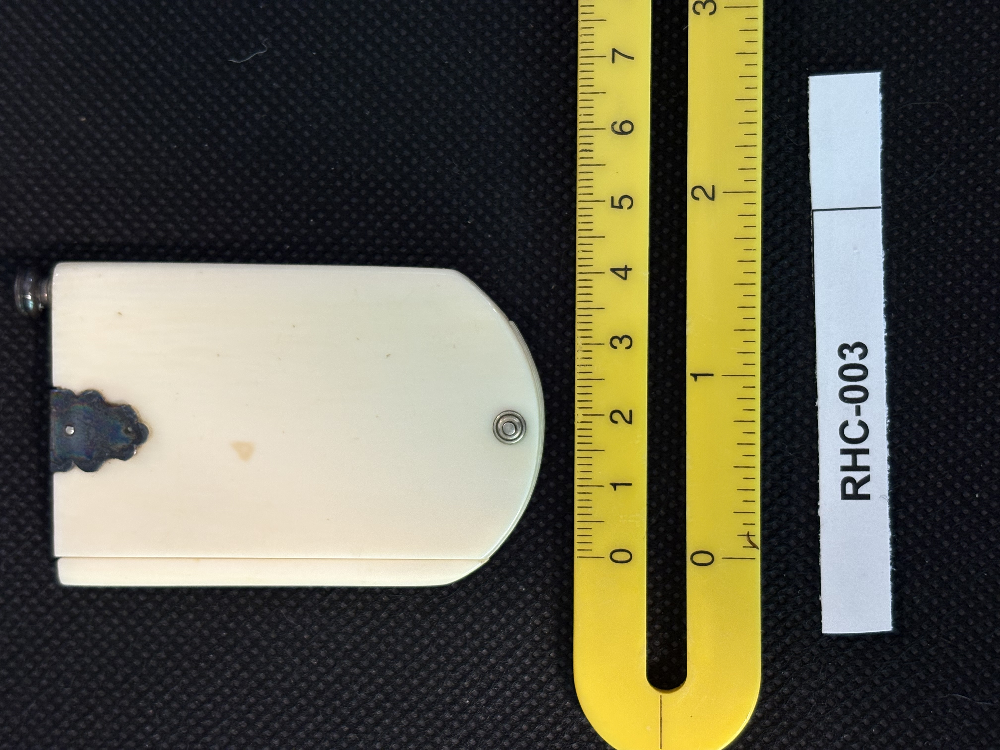
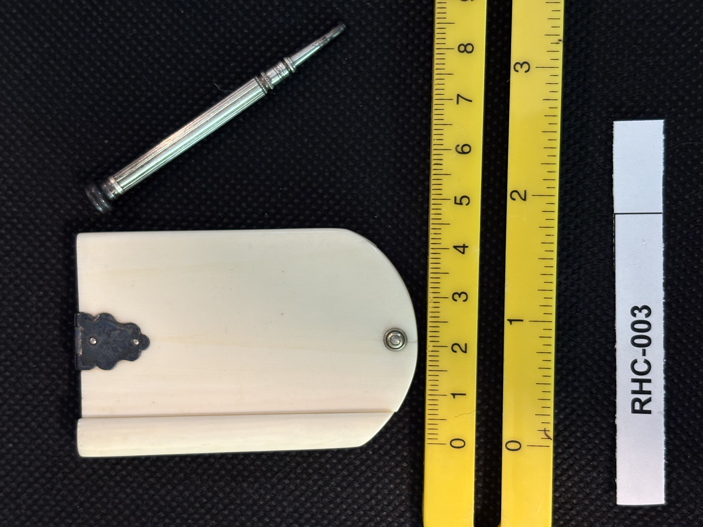

RHC-003 reviewed
Ivory Aide-Mémoire (Memorandum Tablet) Case with Telescoping Pencil


- Object Type
- Ivory aide-mémoire / ladies' dance-card case (per Richard H. Cornelia: used at formal dance parties for young women to reserve dance times with suitors), with an internal accordion of ~5 sleeves (not opened for photography), and a separate matching telescoping pencil
- Material
- Ivory (presumed — not confirmed vs. an early synthetic substitute such as ivorine/celluloid), cream-white with light age-yellowing. Black wrought-iron hinge/latch hardware (oxidized patina). Small clear ball feet at the two bottom corners. Separate silver-tone telescoping metal pencil (likely nickel or chrome plated brass) with a threaded tip that fits a storage socket on the case.
- Dimensions (cm)
- length: 7.0cm — Case length (~7cm) measured off the cm scale; width/depth not measured — ruler only runs along one axis in these photos. Pencil length not precisely measured, positioned above the ruler's zero point in its photo.
- Subject Matter
- No engraved or carved imagery — plain ivory cover panels. Decorative interest is entirely in the wrought-iron floral-scroll hinge/latch hardware, not in any pictorial scene.
- Artist Attribution
- not applicable — manufactured decorative/functional object, no individual artist signature
- Date / Period
- Undated. Style (ivory memorandum case with wrought-iron floral hinge, ball feet, matching telescoping pencil) is consistent with 19th century (Victorian era) manufacture — a common ladies' accessory of that period. Stylistic estimate only, not confirmed.
- Mount / Display Stand
- Not mounted — photographed lying flat on the black fabric background next to the reference ruler, same as other items. No stand.
- Color / Technique
- No scrimshaw or engraving technique present. Surface is plain, undecorated ivory; the only ornamentation is the applied metal hardware.
- Condition Notes
- Iron hinge/latch shows dark oxidation consistent with age. Ivory panels show light yellowing and a small stain/mark on one panel (visible in RHC-003-b). Interior not photographed in this set — presence/condition of ivory writing leaves inside, and any hidden maker's marks, could not be assessed. Pencil appears intact with visible threading for storage attachment. Not physically examined.
- Distinguishing Features
- Functional Victorian-style ivory memorandum/aide-mémoire case paired with its original telescoping pencil (pencil threads into a socket on the case for storage). No scrimshaw engraving present at all — another item suggesting the collection may need a broader name than 'Scrimshaw' once everything is categorized.
- Legal / Regulatory Status
- If genuine ivory (elephant or marine mammal derived), this would be subject to significant restriction on sale/interstate commerce under the Endangered Species Act and/or African Elephant Conservation Act, depending on species and age — genuinely antique (pre-1900-ish) ivory pieces have some documented exemption pathways in certain jurisdictions but require supporting documentation. Flag for legal review before any loan/sale; not a legal determination. Material not yet confirmed as true ivory vs. an early synthetic substitute, which would carry no such restriction — worth verifying before treating this as a regulated item.
- Rights / Copyright
- Manufactured decorative/functional object; no individual artist signature identified; no copyright concern identified beyond standard object photography rights.
- Keywords
- ivory aide-memoire memorandum tablet Victorian telescoping pencil wrought iron hinge not scrimshaw technique
- Status
- reviewed
- Date Cataloged
- 2026-07-15
Open Research Questions
Research finding (phase 3, 2026-07-15): Confirmed this object type — the 'aide-memoire' (memorandum tablet) was a common Victorian-era pocket/handbag accessory: thin riveted ivory leaves (5-8 pages, often pre-printed with days of the week) meant to be written on in pencil and wiped clean weekly, frequently paired with a small telescoping silver propelling pencil exactly like this piece's — confirms both the object's identification and a Victorian-era dating estimate. No specific maker mark found; would need to inspect the interior leaves directly (per the original research note) for a hidden hallmark. Per Richard H. Cornelia (written review of printed catalog booklet, 2026-07-19): "Ladies memory tablet. If opened very carefully, it would show the inner sleeves. If I remember, there were about 5 sleeves. These were commonly used at wealthy dance parties where young women reserved dance times for suitors." Confirms function as a Victorian dance-card/aide-mémoire holder (not just a general memorandum tablet) with an internal ~5-sleeve structure not previously documented (not opened during photography).